Revive cada celebración, bautizo, actividad juvenil y encuentro familiar que Dios nos ha permitido disfrutar en Aberdeen, MD.
Un día de fiesta en los cielos y en nuestra congregación celebrando el paso de fe y obediencia de nuestros hermanos.
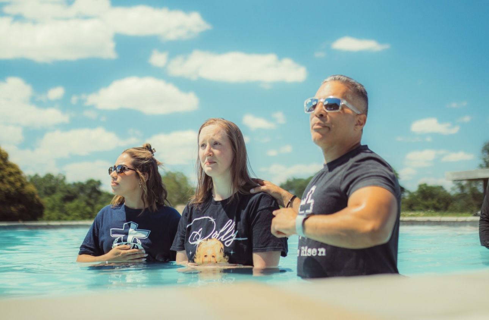
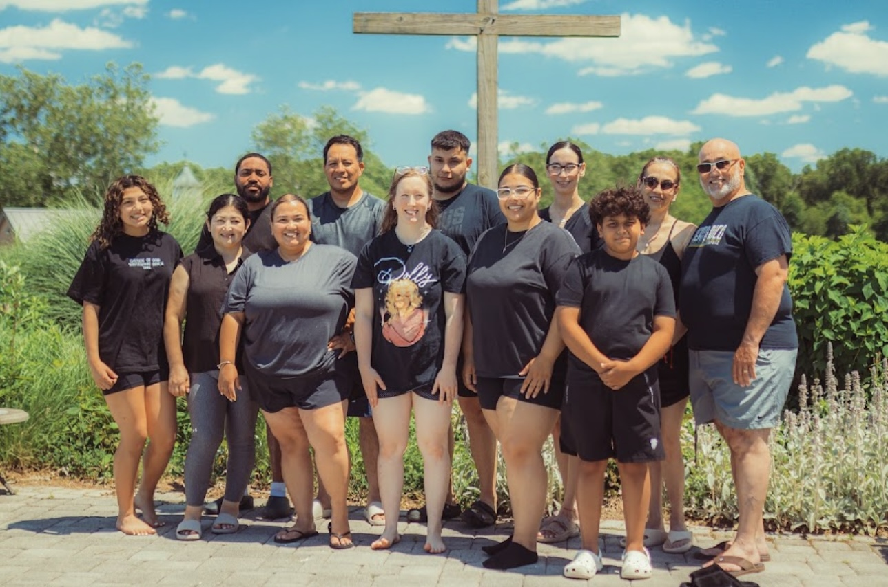
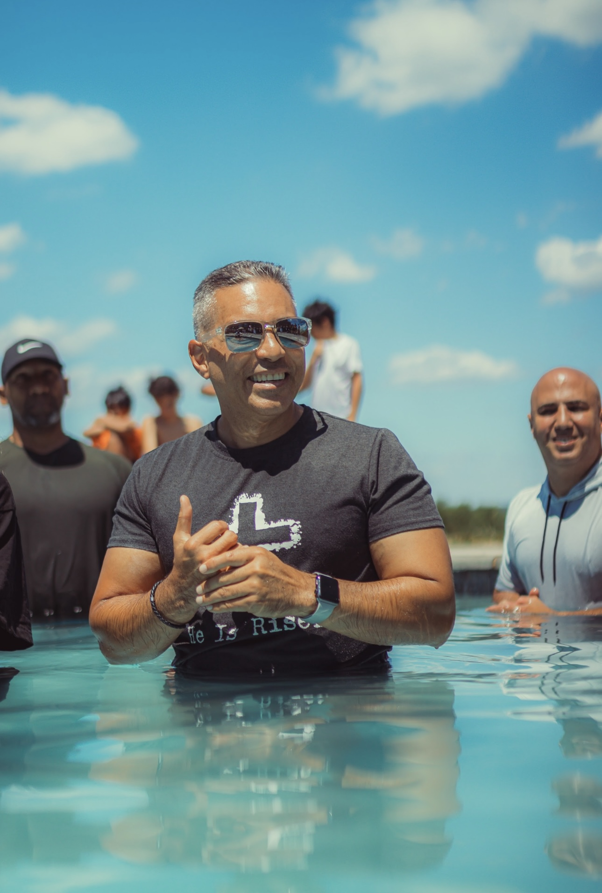
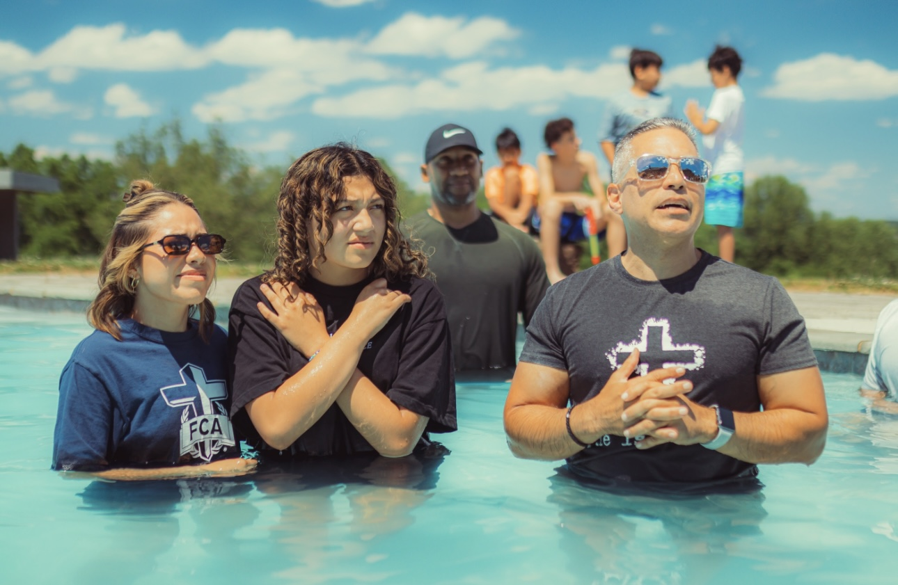
Un tiempo especial de adoración, palabra y hermandad donde las mujeres de nuestra iglesia son fortalecidas para impactar sus hogares y su entorno.
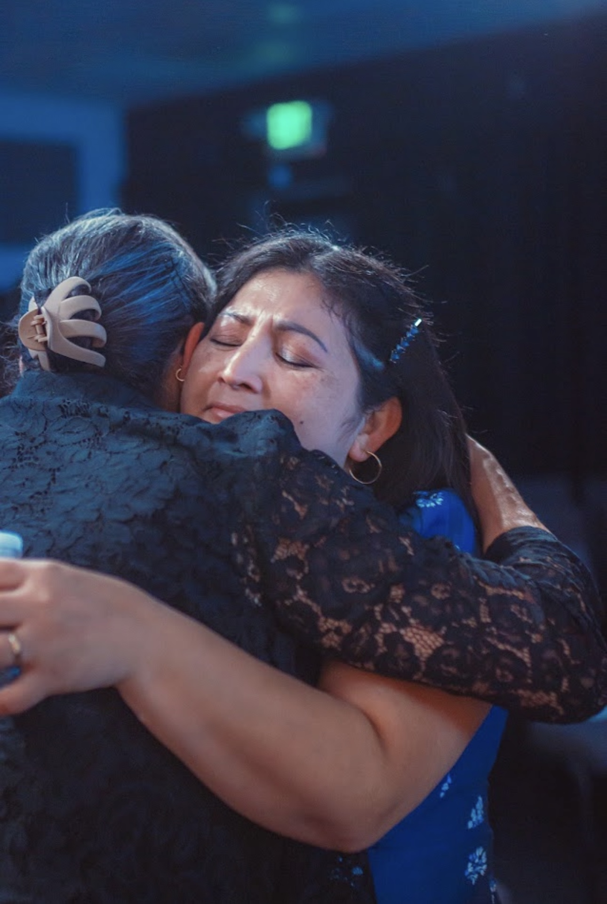
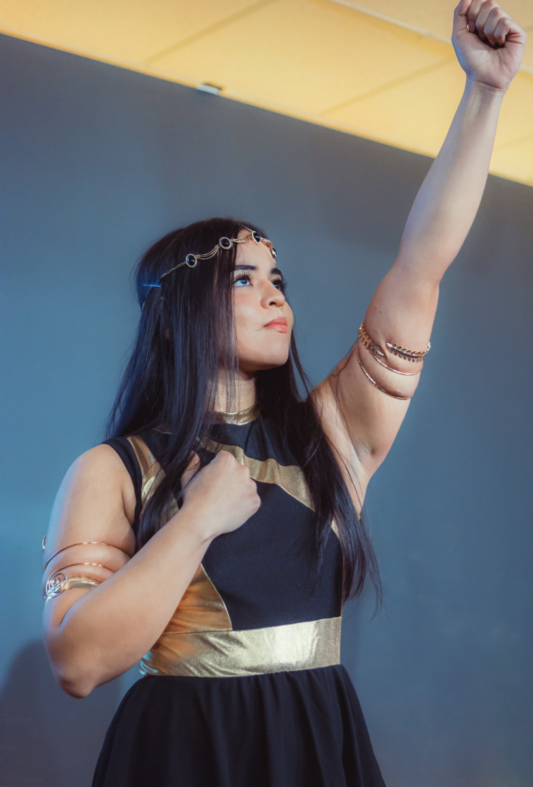
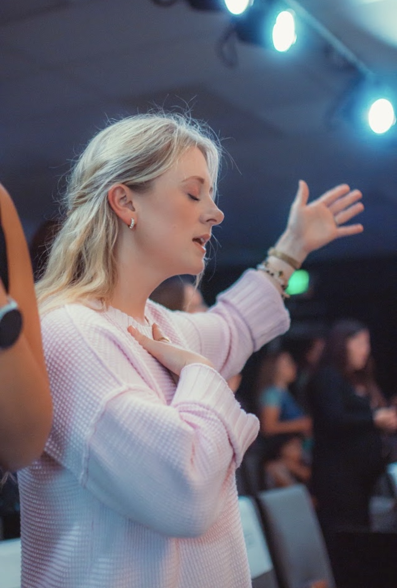
Momentos llenos de alegría, juegos, creatividad y enseñanza bíblica para que los más pequeños conozcan el amor de Jesús.
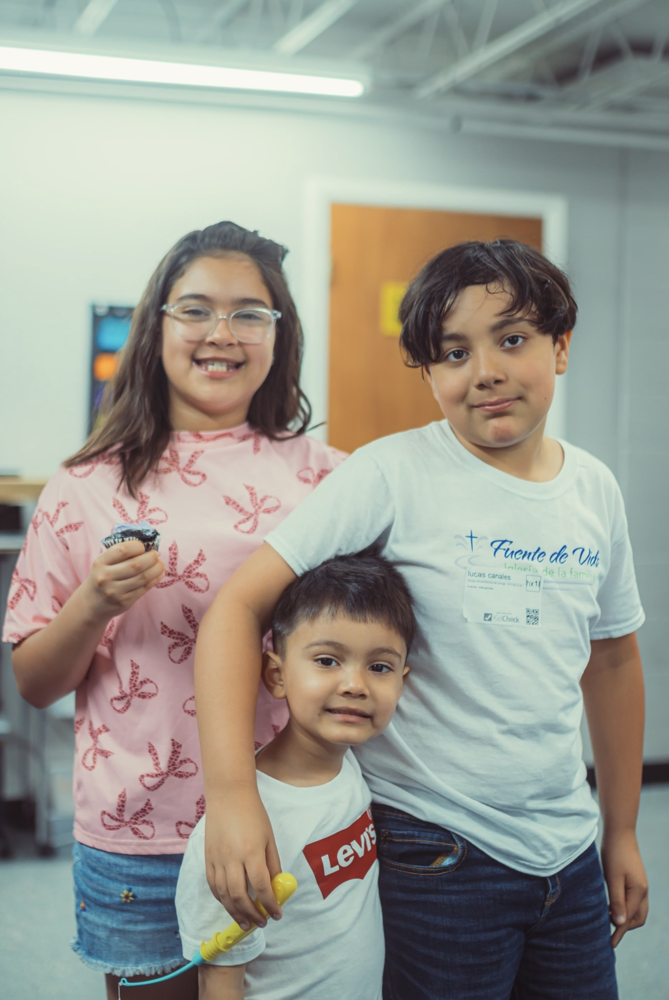
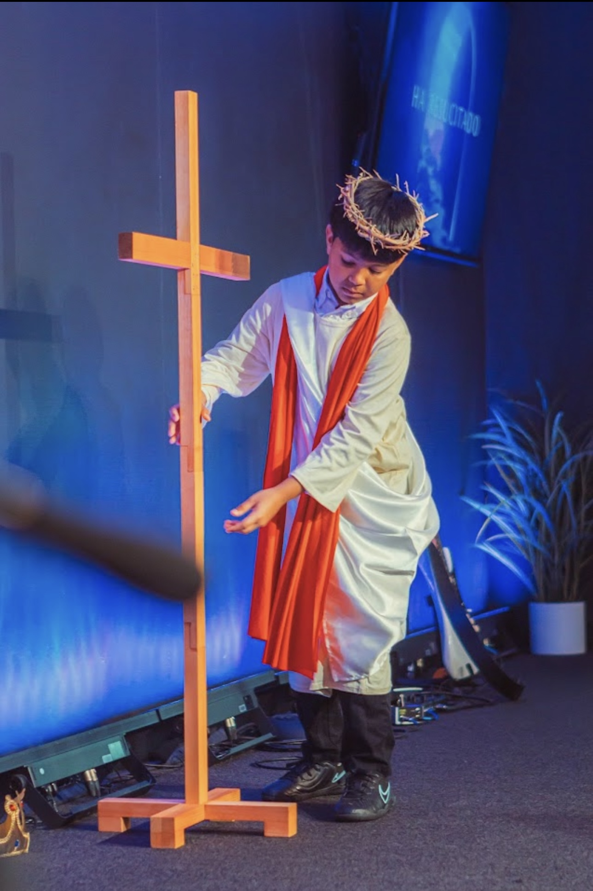
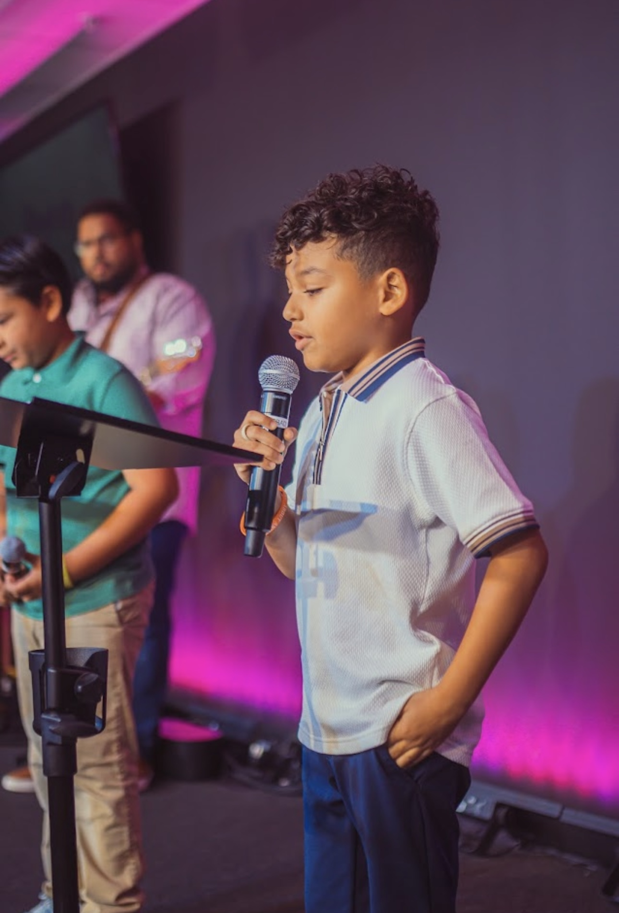
Una generación apasionada por Cristo, creciendo en fe, propósito y unidad a través de encuentros, adoración y la Palabra.
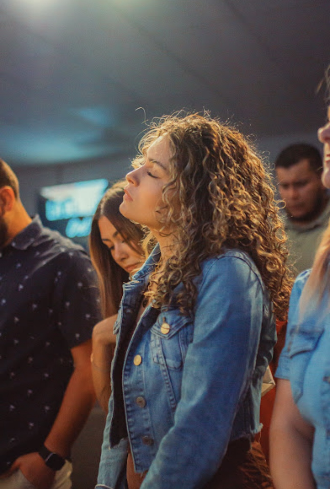
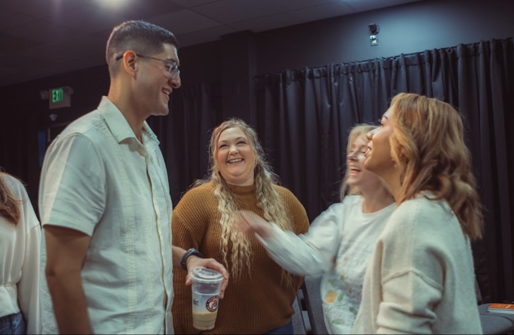
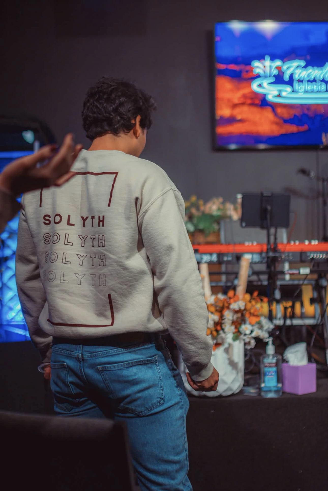
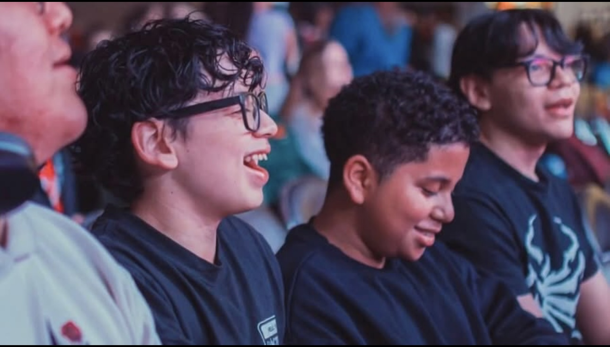